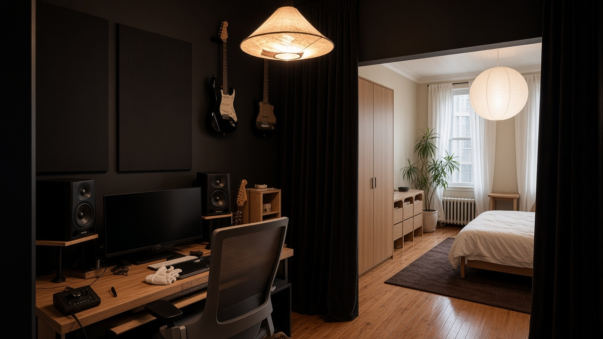
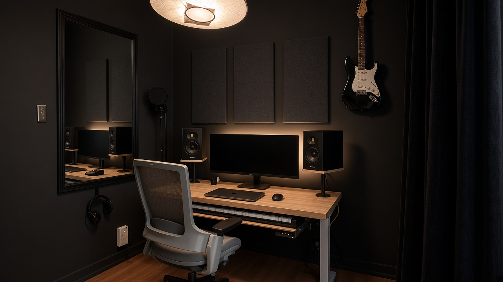
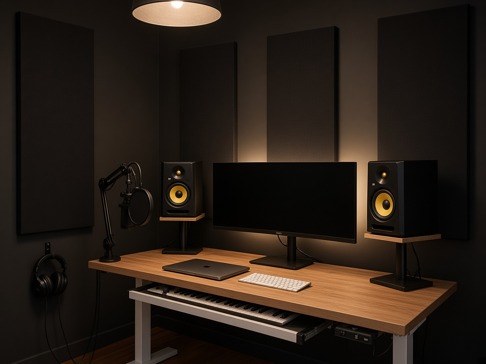
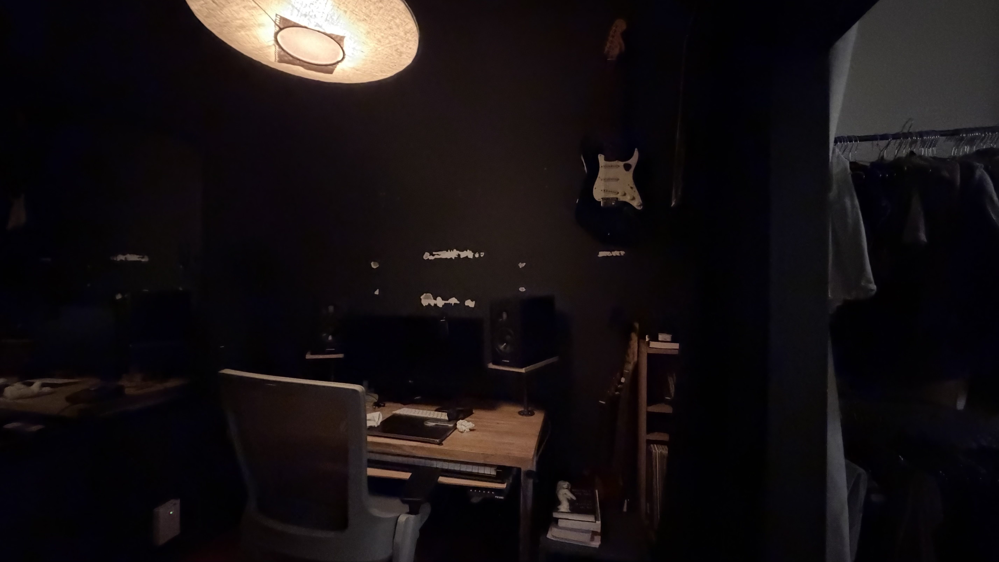
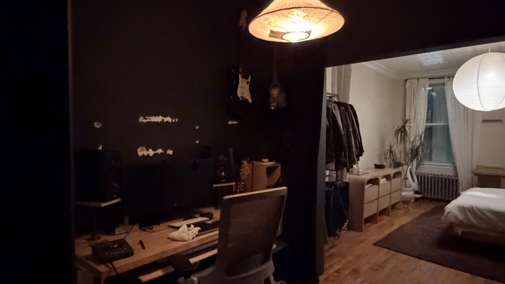
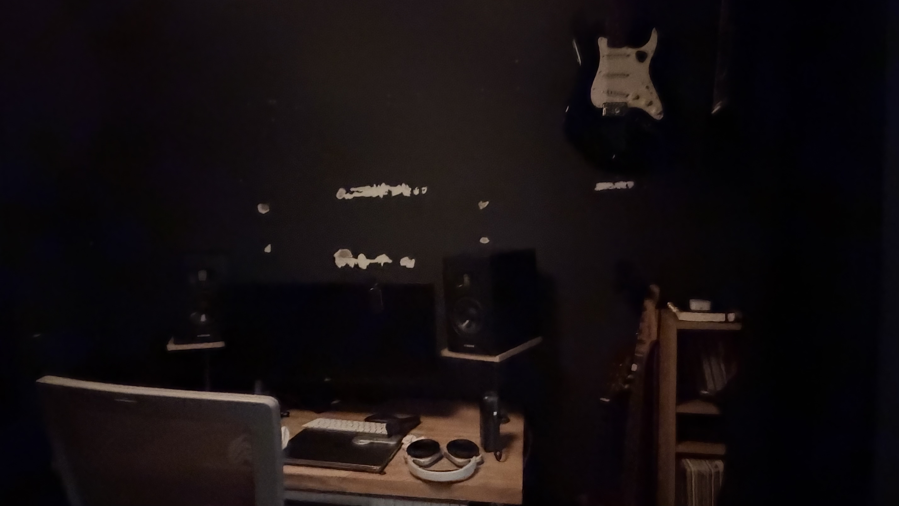

Keep
- Matte black studio envelope + warm paper pendant
- Oak sit-stand desk, mesh chair, MIDI under-tray
- Adam monitors, boom mic, wall Strat as art
- Cream bedroom, Akari lantern, plant, dark rug
Design direction · Moody producer atelier
Keep the black booth, oak desk, Adams, and wall guitars. Finish the wall, hide the clothes, close the curtain — so work and sleep finally have separate jobs.

The kit is already professional. The envelope is not finished yet.
Generated from your angles — same layout, finished presentation.


Stay inside what you already own. No bright-office reset.
Three weekends. Highest visual return first.
Fill, sand, prime, repaint. Mount three charcoal fabric acoustic panels behind the monitors — they erase the scars and fix first reflections.
Ceiling-track floor-to-ceiling charcoal curtain that closes flush. Replace the open garment rail with a closed light-wood wardrobe.
Under-desk cable tray, warm bias strip behind the ultrawide, isolation pads under the Adams. Guitars stay on the wall as the room’s signature.
Keep cream walls, white linen, Akari, plant, and rug. Clear floor book stacks into closed storage so the bedroom never looks like office overflow.
Buy once, in this order.
| Priority | Item | Why |
|---|---|---|
| P0 | Matte black paint + primer + spackle | Erase mid-reno scars on the hero wall |
| P0 | Closed wardrobe (match dresser oak) | Kill open clothes in the desk sightline |
| P1 | Ceiling track + heavy charcoal drapery | Real studio threshold |
| P1 | 3× fabric acoustic panels (~24×48″) | Looks designed + better monitoring |
| P2 | Under-desk cable tray + raceway | Clean silhouette on calls / photos |
| P2 | Warm-white LED bias strip | Match the pendant at night |
| P3 | Monitor isolation pads + dimmer | Polish acoustics and lighting scenes |
Reference inventory from the shoot.





